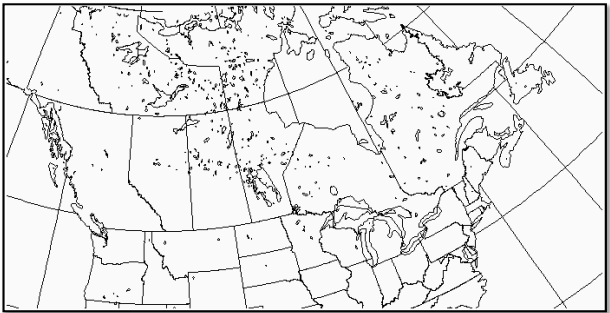

Glossary
Learn common terms used within this guide
CaPA-HRDPA is a high resolution deterministic precipitation analysis system that provides objective estimates of precipitation amounts for a specific domain by combining readings from precipitation gauges, radar precipitation estimates (QPE's) and a trial field generated from a numerical weather prediction system (HRDPS).
Current version: 5.1.0
The CaPA-HRDPA domain is exactly the same as the one for the national HRDPS. This continental window covers all of Canada minus the most northern arctic islands. The south border of the domain is located north of a line going from the northern boundary of California to South Carolina. CaPA-HRDPA has a spatial resolution of 2.5 km.

HRDPA produces four sets of cumulative precipitation analyses (6-hour amounts per day) valid at synoptic hours (00, 06, 12, and 18Z) each day. HRDPA also produces two 24-hour precipitation amounts in step with the climatological day valid at 06 and 12 UTC.
A 'preliminary' analysis is completed 1 hour after the time of validity and another called 'final' is produced 7 hours later, which results in a total of 8 analyses for a day.
| Variable | Variable long name | Unit | Level | Frequency |
|---|---|---|---|---|
| PR | Total precipitation | kg/m2 | surface | 6h |
| CFIA | Confidence Index of the Analysis | - | - | 6h |
| PR | Total precipitation | kg/m2 | surface | 24h |
There are multiple ways to access HRDPA. Currently, it is available on both MSC Datamart and MSC GeoMet .
The data can also be access on the Canadian Surface Prediction Archive (CaSPAr) ,
which is an archive of numerical weather predictions issued by Environment and Climate Change Canada.
Currently HRDPA data is available in GRIB2 file format, click here information on file formats
ORGANIZATION_PRODUCT_VARIABLE_ANALYSISWINDOW_LEVEL_GRID_YYYYMMDDHH_000
| String | Description |
|---|---|
| ORGANIZATION | Refers to the group that creates the files |
| DATASET | Refers to the model. |
| VARIABLE | Refers to the variable of the analysis. For HRDPA, ACPC refers to the PR (precipitation) |
| ANALYSISWINDOW | - |
| GRID | Refers to the vertical coordinate (pressure level, surface, sub-surface, etc.). sfc = Surface |
| YYYYMMDDHH | The issue date and time |
| 000 | Would normally refer to the forecast hour, but is not applicable as this product is an analysis |
click here for descriptions of various operational statuses
| Run type | Valid dates | Product type | Comment |
|---|---|---|---|
| Operational | 2021/12/01 to Present | Analysis | Fully operational IC3 product suite |
| Parallel | 2021/09/15 to 2021/12/01 | Analysis | Suite ran in parallel |
Technical note
Specifications
Change log
The End-User Licence for Environment and Climate Change Canada's Data Servers specifies the conditions of use of this data.
Learn common terms used within this guide

Discover tutorials and ways to use data

Learn how to access CMC products